v0.3.0 三处修复
中文标点紧贴 ** 时加粗失效、_ 紧贴 emoji 时序列化会多转义一层、Linux 打包缺 ALSA 依赖——三处都修好了。
本地 Markdown 编辑器。你的笔记就是一堆标准 .md 文件，躺在自己的文件夹里——秒开、离线、零格式锁定。
NoteLume（文溯）是一款本地优先的 Markdown 编辑器，把 Typora 式的所见即所得写作与 Obsidian 式的双向链接知识库做进同一个免费开源（Apache-2.0）的桌面应用：公式、图表、表格在渲染态直接改，双链、标签、全库搜索与 Git 面板对着原生文件夹干活，不联网、不上传、不私有格式。
Markdown 与富文本双向无损往返。KaTeX 公式、Mermaid 图表、合并单元格表格，都在渲染态直接编辑，不用切源码模式。
[[双链]] 输入补全、#标签 全局视图、双向链接、全库搜索、Canvas 知识图谱——都对着你自己的文件夹干活。
纯 GFM 文件，Typora 和 Obsidian 能直接打开同一份库。默认不联网、不上传，删除进系统回收站；要接大模型时自己填 API 端口，数据直达你配置的服务。
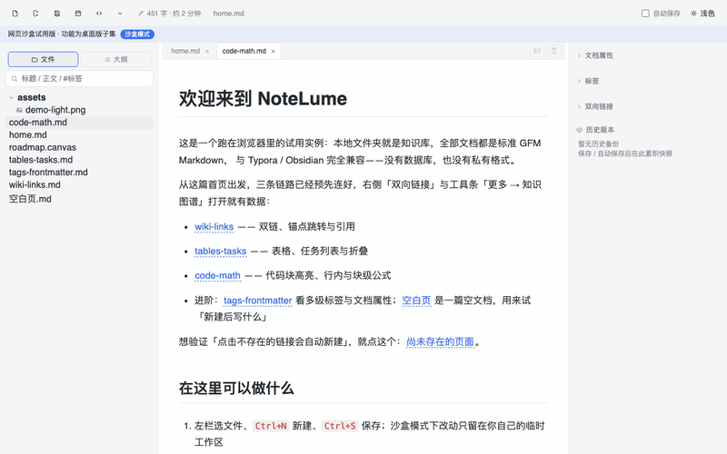
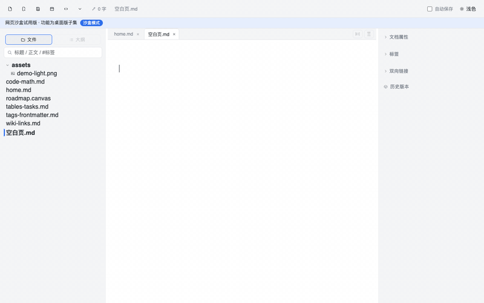
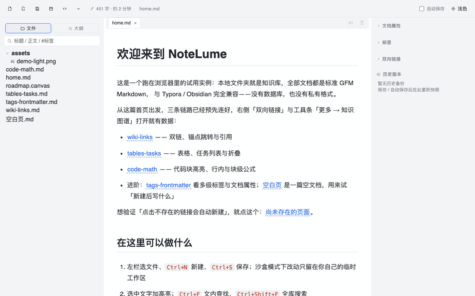
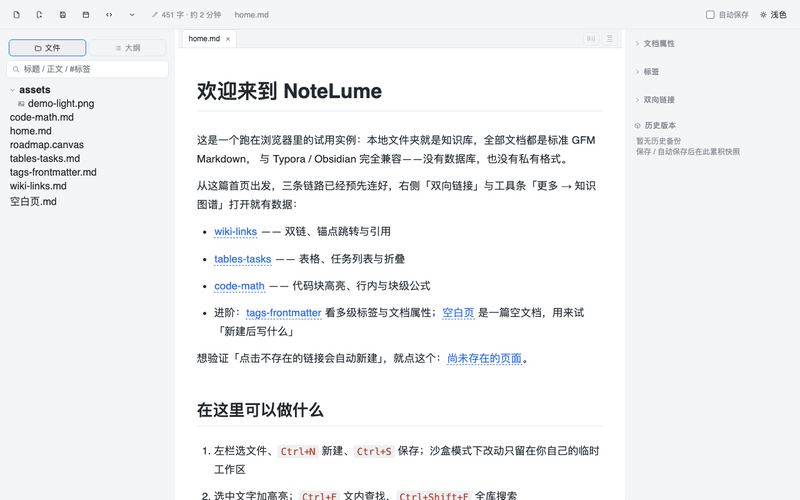
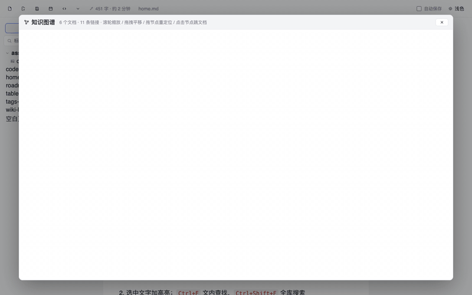
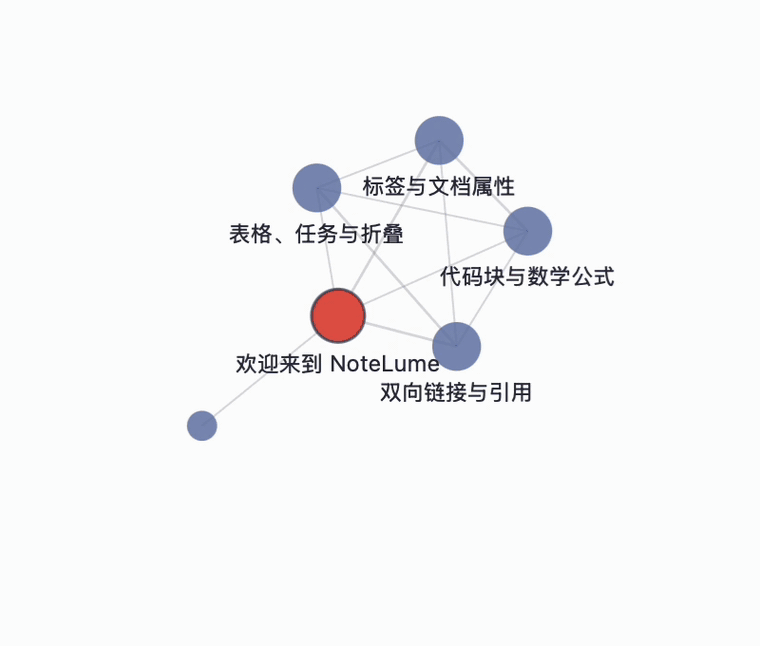
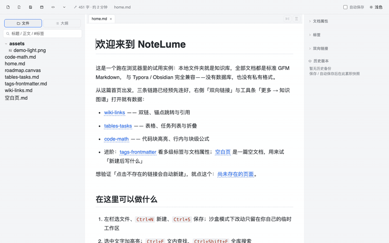
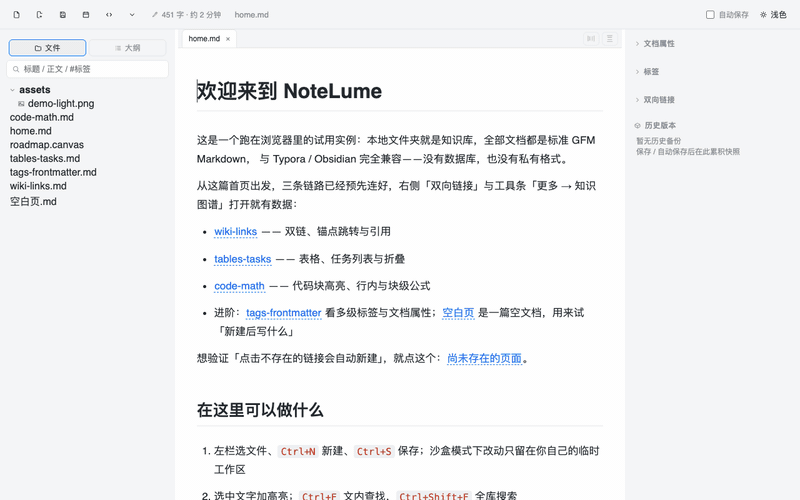
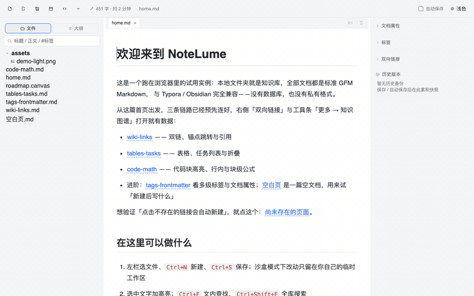
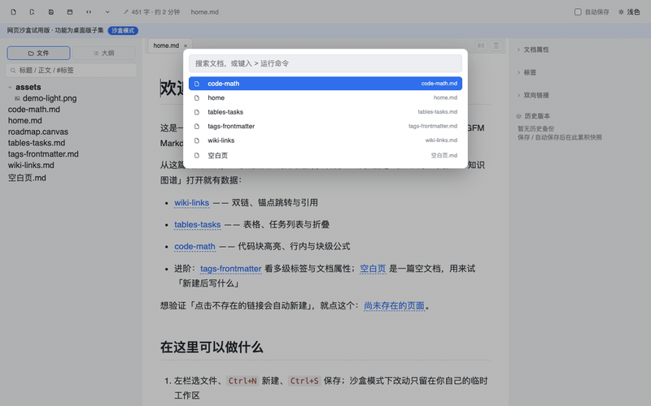
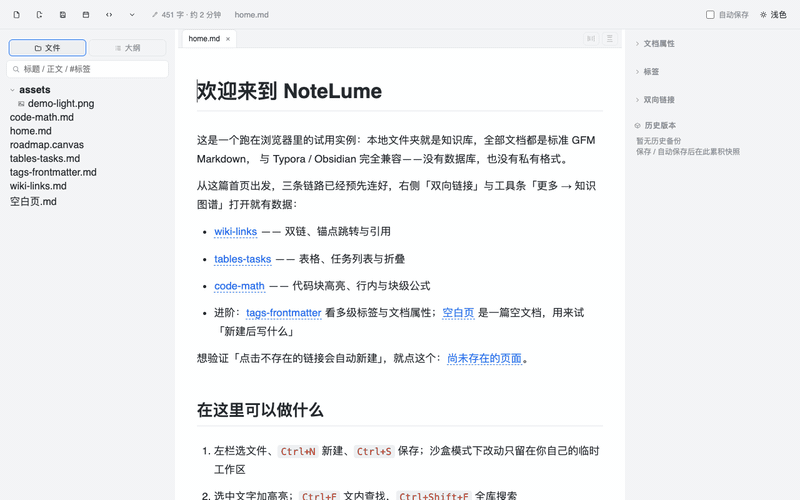
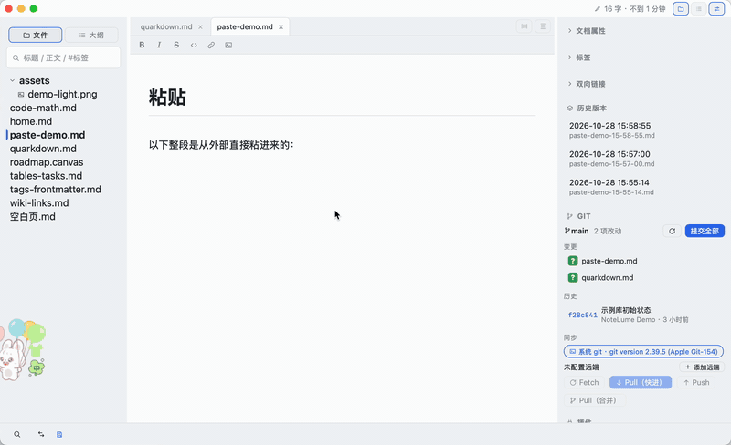
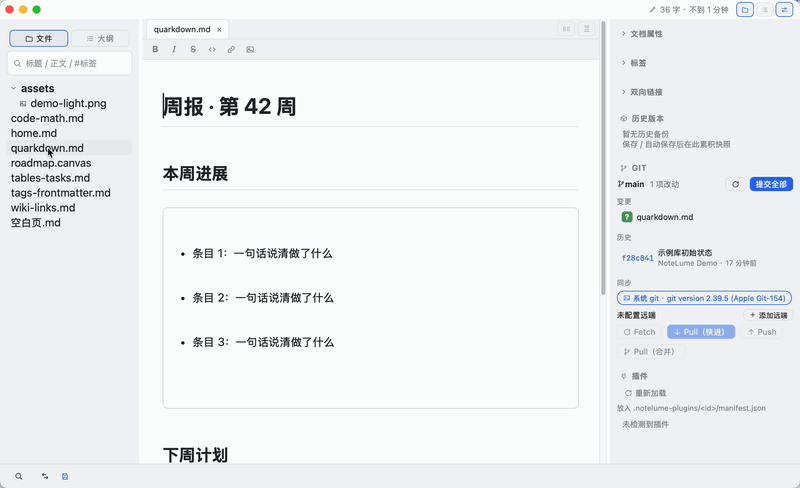
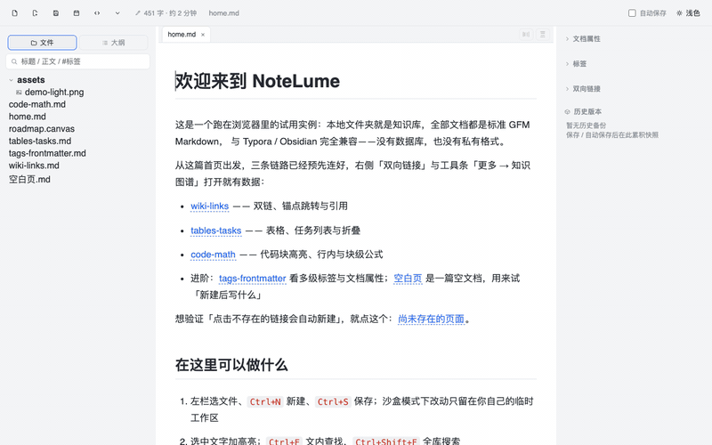
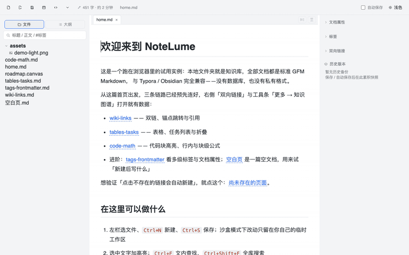
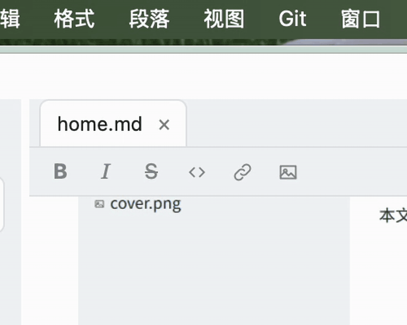
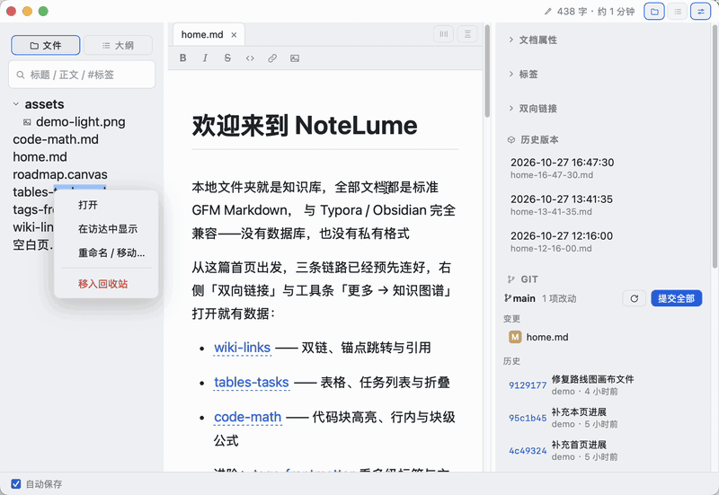
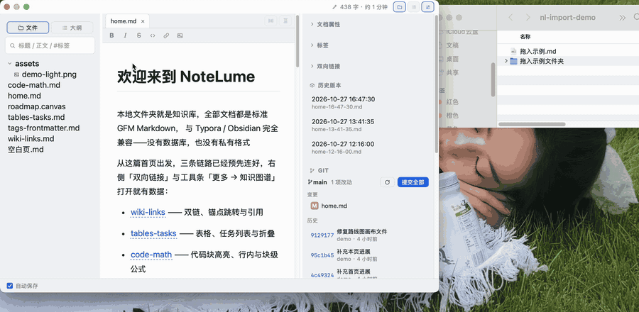
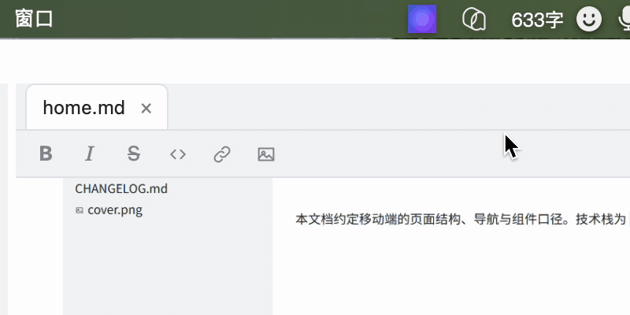
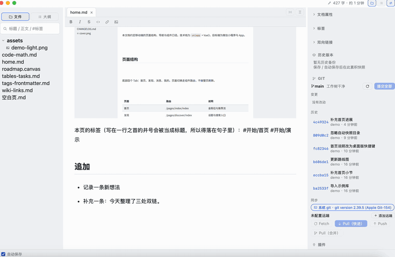
NoteLume 的功能分成写作体验、知识管理、开发工具、隐私与数据四组。下面写的都是当前版本做得出来的事，不是路线图。
所见即所得的 Markdown 编辑：正文、KaTeX 公式、Mermaid 图表、合并单元格表格、代码块语法高亮都在渲染态直接改，不用切源码模式。敲 - 成列表、段首敲 ``` 就地成代码块并弹语言联想，/ 出斜杠菜单，Ctrl+B / Ctrl+I 加粗与斜体；行号装订线按折行后的视觉行连续编号，专注与打字机模式、双栏对照、大纲层级折叠都在。
[[双链]] 输入补全、双向链接面板、#标签 全局视图、全库搜索、文档大纲、Canvas 便签板与知识图谱——索引对着你自己的文件夹建，不写私有数据库，图谱里拖一个节点就能直接跳到那篇笔记。
侧栏 Git 面板看得见状态、历史与 diff，提交、建分支、检出、revert 都在界面里，机器上没装 git 也有 git2 引擎兜底；命令面板 Ctrl+Shift+P、键位可重绑、多窗格分栏与标签拖拽；Quarkdown 引擎让笔记可编程（.var / .foreach / .if，约 200 个内置函数）；导出有单篇 HTML / PDF 打印 / 整库幻灯片 / 整库静态站 / 标准 GFM 副本。
数据就是原生文件夹里的标准 GFM 文件，Typora 和 Obsidian 能打开同一份库；默认不联网、不上传，删除进系统回收站；要接大模型时自己填 API 地址，请求只发往你配置的服务。不同于 Notion 那类云端锁定，库留在哪里、什么时候搬由你定。界面五语言：简体中文 / 繁體中文 / English / Français / Deutsch。
粘贴即净。从 AI 对话框、飞书、公众号复制的内容，
进编辑器前就摘掉杂质。
代码块的「复制」按钮、行号装订线、空段落串联，在写入前自动清理，不用粘完再手修第二遍。
让笔记可编程。.var、.foreach、.if
直接写进 Markdown，约 200 个内置函数。
快照式预览，光标移出指令区即出结果，源文件一个字节不动。不用指令的文档仍是纯 GFM。
Git 长在里面。状态、历史、diff、提交、冲突解决，
全部内建。
git2 引擎，机器上没装 git 也能 fetch 和 pull。Word 导入同样离线直读，落库前可视化校对。
三者都能落地写 Markdown，取向不同。这张表按维度逐项对照，NoteLume 不占优的行也照实写。
| 维度 | NoteLume（文溯） | Typora | Obsidian |
|---|---|---|---|
| 编辑模式 | 所见即所得，渲染态直接改 | 所见即所得 | 源码与预览分离的实时渲染 |
| 知识管理 | 双链 / 标签 / 图谱 / 全库搜索 / Canvas 内建 | 无 | 双链 / 标签 / 图谱，社区最强 |
| 本地优先 | 纯 GFM + 原生文件夹，零私有格式 | 纯 md 文件 | md 文件 + .obsidian 配置与私有语法 |
| 开源与价格 | 免费，Apache-2.0 | 付费买断 | 闭源，个人使用免费 |
| Git 集成 | 内建面板，没装 git 也能用 | 需外部工具 | 靠第三方插件 |
| 可编程笔记 | Quarkdown 引擎，约 200 个内置函数 | 无 | 靠插件（Dataview 等） |
| 插件生态 | 刚起步，钩子系统在建 | 以主题为主 | 最丰富 |
| 平台 | Windows / macOS / Linux | Windows / macOS / Linux | 桌面 + 移动 + Web |
对照基于三家公开版本与自家功能实测，不引第三方评分。「插件生态」与「移动端」两行 NoteLume 确实落后：前者是新产品的时间问题，后者是刻意不做，不是没看见。
单篇打磨、出版级排版，不需要双链和库管理，也愿意为软件付费。Typora 在这条路上走了很多年，打磨得比谁都细。
依赖移动端、第三方插件和现成社区方案，愿意为配置花时间。知识库玩法多到超出预期，插件生态是 NoteLume 短期追不上的。
想在渲染态直接改正文，又要双链、图谱和 Git 面板，还要文件拿去别的编辑器也打得开。免费开源，不折腾配置也能直接用。
Windows 取 .exe 安装包，macOS 按芯片取 .dmg，Linux 取 AppImage / deb / rpm。装完双击打开即可。
首次界面里选「打开知识库文件夹」，指到已有的笔记目录；没建库就按 Ctrl+N，文件先落在临时目录，Ctrl+S 时再选正式位置。
敲「- 加空格」成列表，段首敲三个反引号就地成代码块，敲「/」出斜杠菜单，Ctrl+B / Ctrl+I 加粗与斜体。公式和图表在渲染态直接改。
敲「[[」补全其它文档名，敲「#」打标签；侧栏看双向链接与大纲，Ctrl+Shift+F 全库搜索，图谱看连接关系。
库是 git 仓库时侧栏 Git 面板直接看状态、历史、diff 并提交；导出走「更多」菜单，HTML / PDF / 幻灯片 / 整库静态站都行。